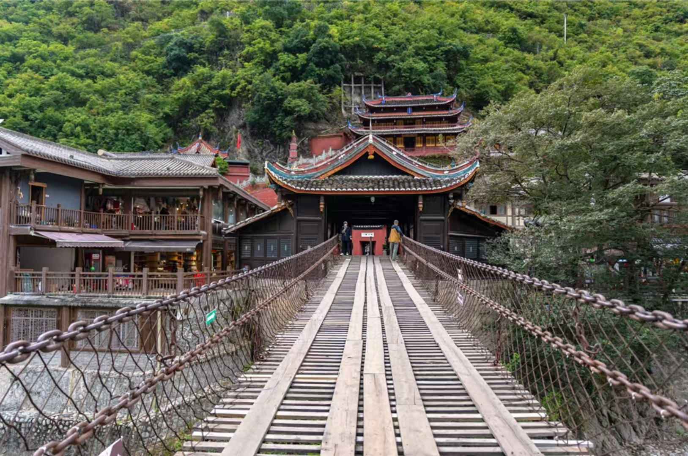
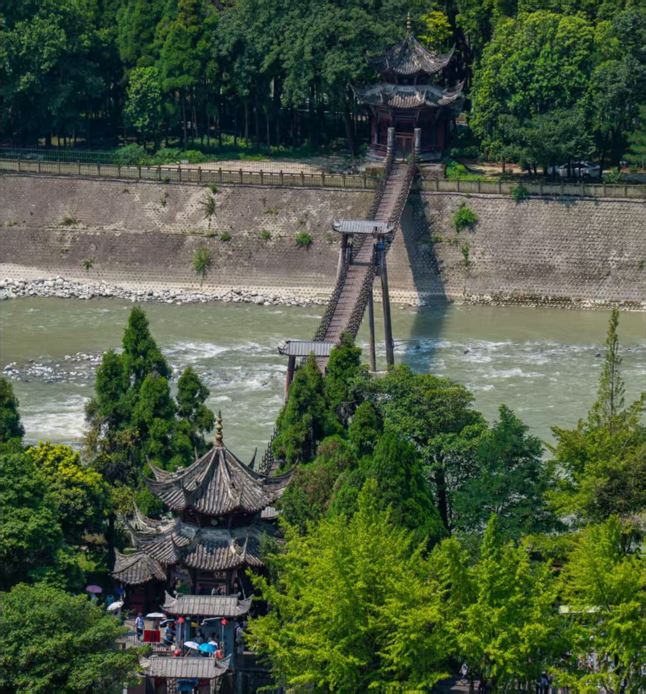

泸定桥
泸定桥（Luding Chain Bridge），又名大渡桥，是中国四川省甘孜藏族自治州泸定县泸桥镇境内的一座跨大渡河铁索桥，为泸定桥风景区的主要景观文物。泸定桥始建于清康熙四十四年（1705年）九月，于清康熙四十五年（1706年）四月投入使用；于1961年3月4日被纳入中国首批全国重点文物保护单位；于2003年纳入景区管理。泸定桥全长103.67米，宽3米，由13根锁链组成，为一座历史悠久的古桥；该桥因“飞夺泸定桥”战斗而闻名中外。
悬索桥，又名吊桥（suspension bridge）指的是以通过索塔悬挂并锚固于两岸（或桥两端）的缆索（或钢链）作为上部结构主要承重构件的桥梁。其缆索几何形状由力的平衡条件决定，一般接近抛物线。从缆索垂下许多吊杆，把桥面吊住，在桥面和吊杆之间常设置加劲梁，同缆索形成组合体系，以减小荷载所引起的挠度变形。

泸定桥（Luding Chain Bridge），又名大渡桥，是中国四川省甘孜藏族自治州泸定县泸桥镇境内的一座跨大渡河铁索桥，为泸定桥风景区的主要景观文物。泸定桥始建于清康熙四十四年（1705年）九月，于清康熙四十五年（1706年）四月投入使用；于1961年3月4日被纳入中国首批全国重点文物保护单位；于2003年纳入景区管理。泸定桥全长103.67米，宽3米，由13根锁链组成，为一座历史悠久的古桥；该桥因“飞夺泸定桥”战斗而闻名中外。

安澜索桥，又名“评事桥”“珠浦桥”“夫妻桥”“何公何母桥”，位于中国四川省都江堰市境内，跨越岷江，是世界文化遗产、世界灌溉工程遗产，被茅以升誉为中国五大名桥。安澜索桥在唐代已然屹立；最早的历史可考于宋淳化元年（990年）大里评事知永康军梁楚建桥；明朝末年索桥被战火烧毁；清嘉庆十二年（1807年）塾师何光德夫妇相继修桥；并于清光绪十三年（1887年）、清光绪二十年（1894年）重建；于1974年确定现址；于1982年作为都江堰的重要组成部分被列入全国重点文物保护单位。安澜索桥东起分江亭，西至堰功亭；全长286.5米，其中外江段索桥长142.5米，同时可容纳300-400人通行。